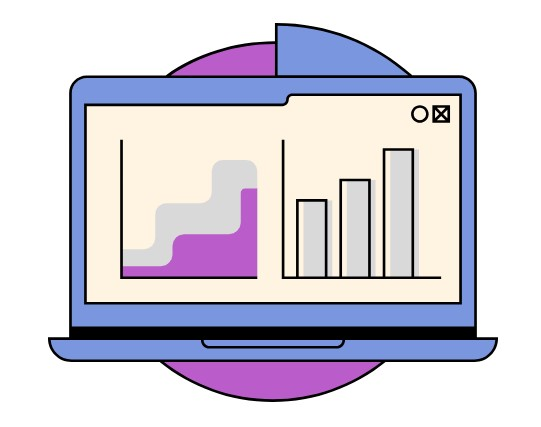
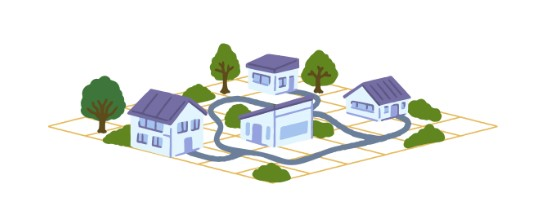
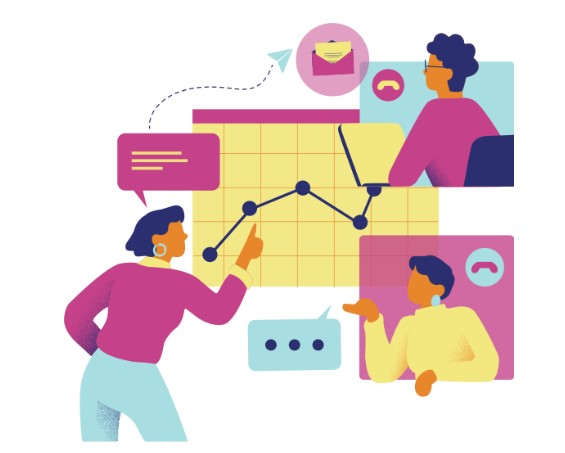
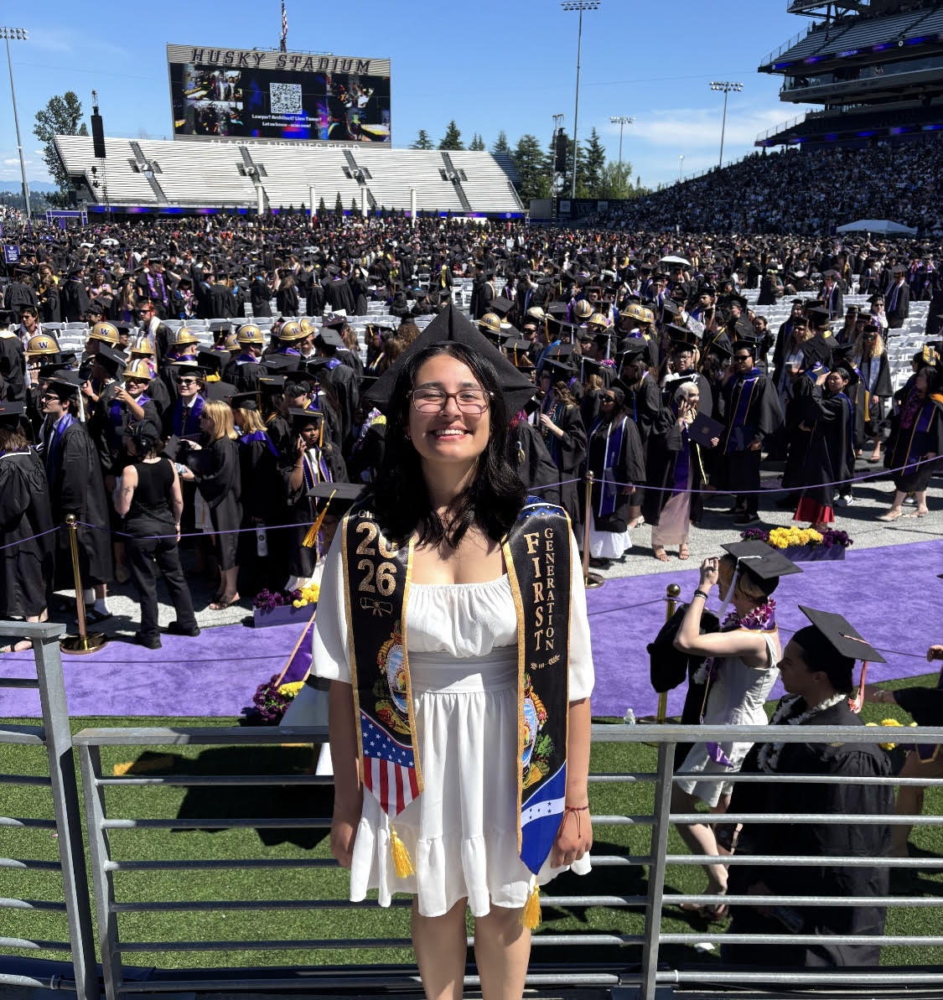
I'm a recent University of Washington graduate with a degree in Geography Data Science and a minor in Informatics. I'm passionate about using data, technology, and mapping to explore real-world challenges and communicate meaningful insights. Through research, web development, and leadership in the GeoDat Club, I've developed a strong interest in geospatial analysis and creating data-driven solutions.



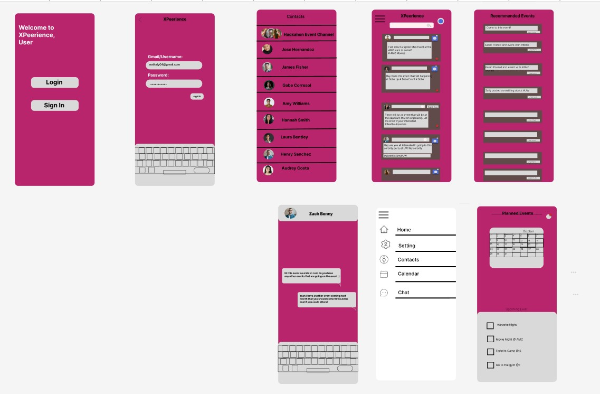
Some quick example text to build on the card title and make up the bulk of the card's content.
Powerpoint.png)
.png)
.png)
.png)
These are all the design posts that I have made throughout my time in the RSO to make annoucnments on events and club meetings through instagram posts.
Social Media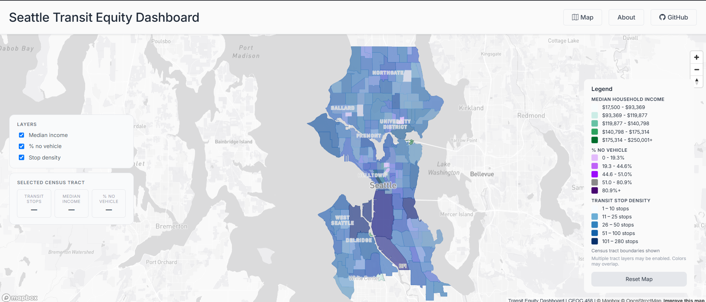
Collaborated with a team of 3 to develop an interactive dashboard analyzing transit equity challenges in Seattle. Utilized Mapbox to visualize and compare three key datasets household income, percentage of households without vehicle access, and transit stop density to identify disparities in transportation accessibility across communities. Analyzed spatial patterns and presented insights on how socioeconomic factors influence transit equity.
Project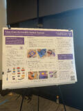
Collaborated on a project designed to help families identify affordable and accessible switch alternatives by providing insights into both low-cost purchasing options and do-it-yourself (DIY) solutions. Researched cost-effective alternatives, curated educational resources, and developed tools to support informed decision-making for households seeking budget-friendly options.
Project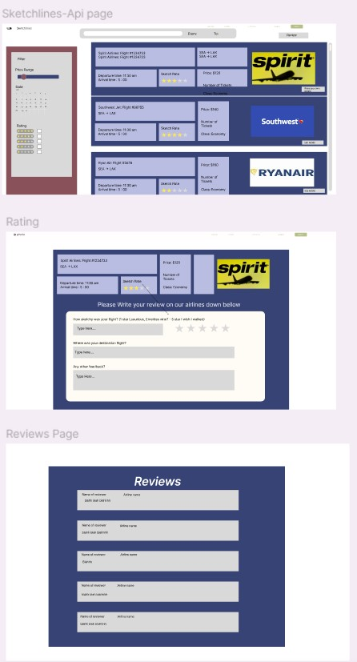

Collaborated with two fellow interns during a summer internship to develop a flight search website focused on helping users find affordable airfare. Utilized the Google Flights API to retrieve and display flight information, while gaining hands-on experience in both front-end and back-end web development. Worked throughout the project lifecycle, from designing user-facing features to implementing server-side functionality, resulting in a fully functional web application.
Project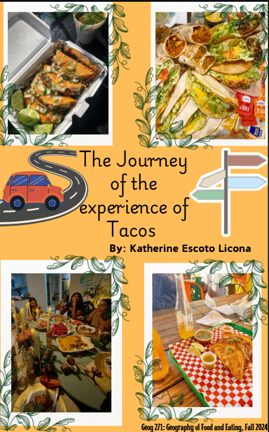
Some quick example text to build on the card title and make up the bulk of the card's content.
Project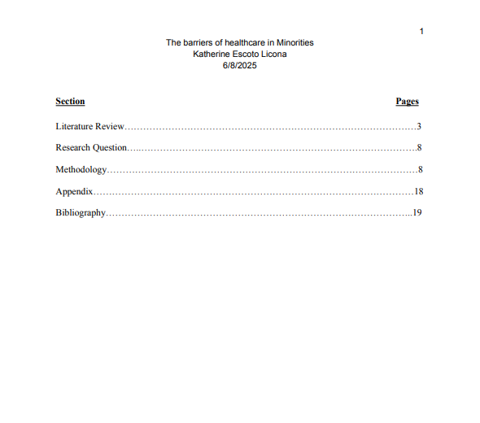
Conducted a two-month research project examining healthcare barriers faced by racial minority women seeking abortion care in Seattle. Analyzed academic and public health sources to identify disparities in access to reproductive healthcare and investigated the geographic distribution of abortion clinics to assess how location may contribute to inequities in care. Presented findings on the relationship between healthcare accessibility, race, and reproductive health outcomes.
Project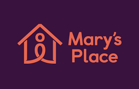
Developed a WordPress website for a Geography and Gender course that examined the impact of Mary's Place on addressing homelessness among women and families in Seattle. Researched the organization's history, services, and community impact to analyze how support organizations contribute to housing stability and social well-being. The project highlighted the importance of community-based resources in assisting individuals experiencing homelessness and explored the broader need for accessible support services within Seattle.
Project